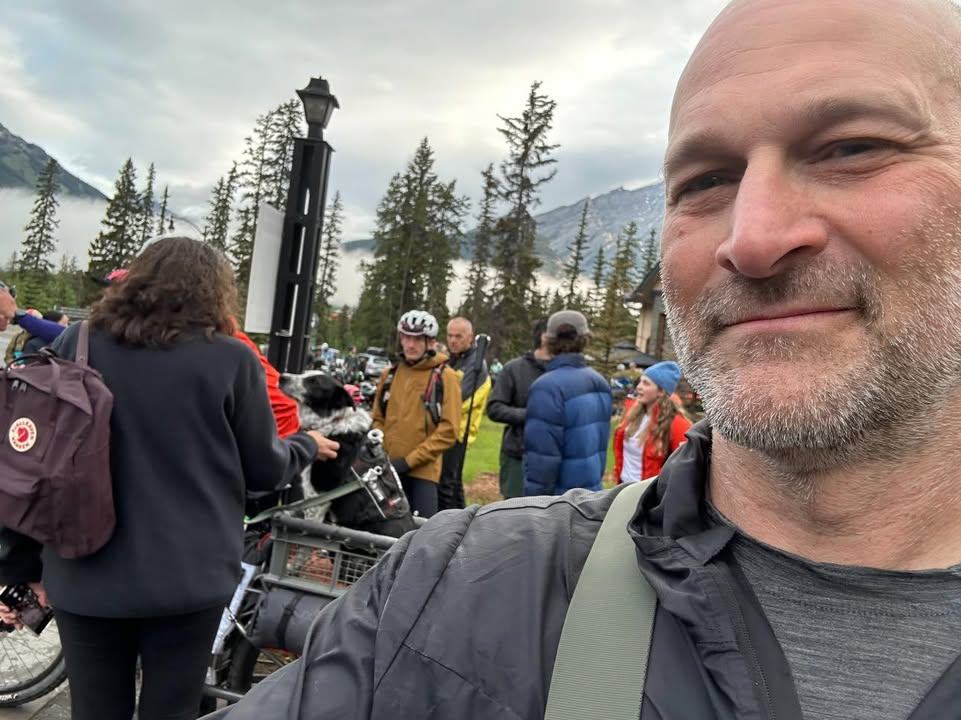
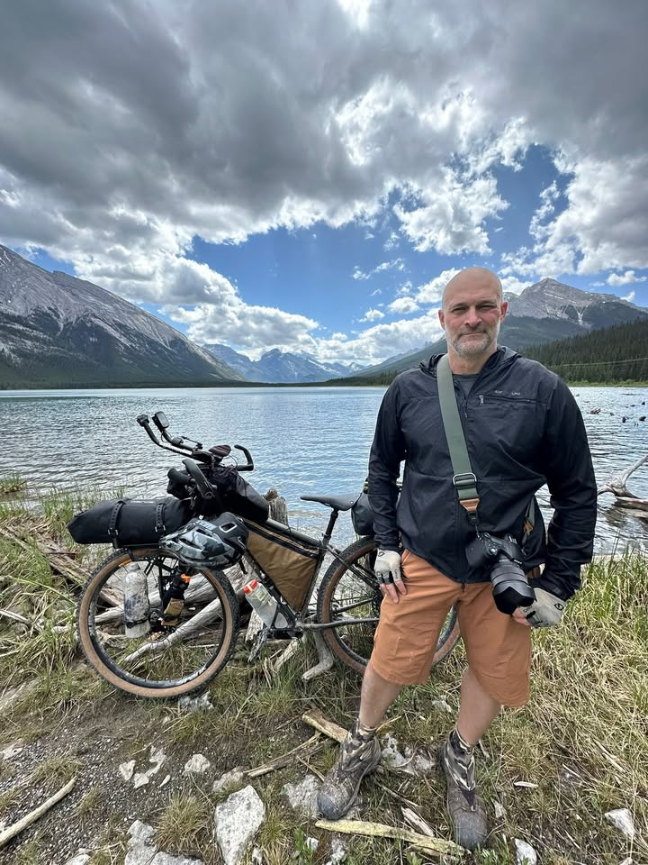
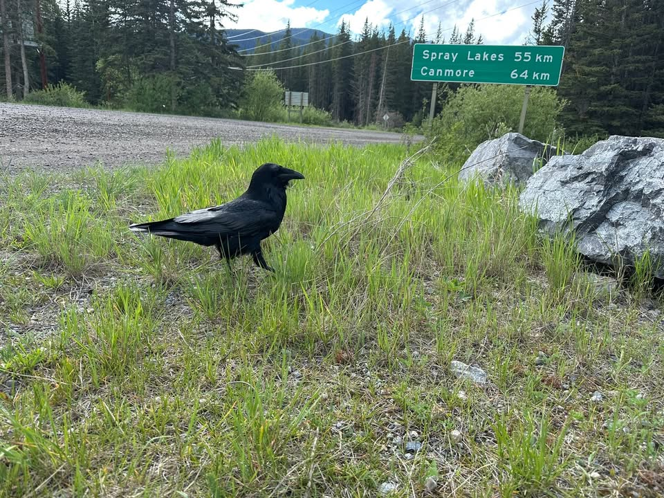
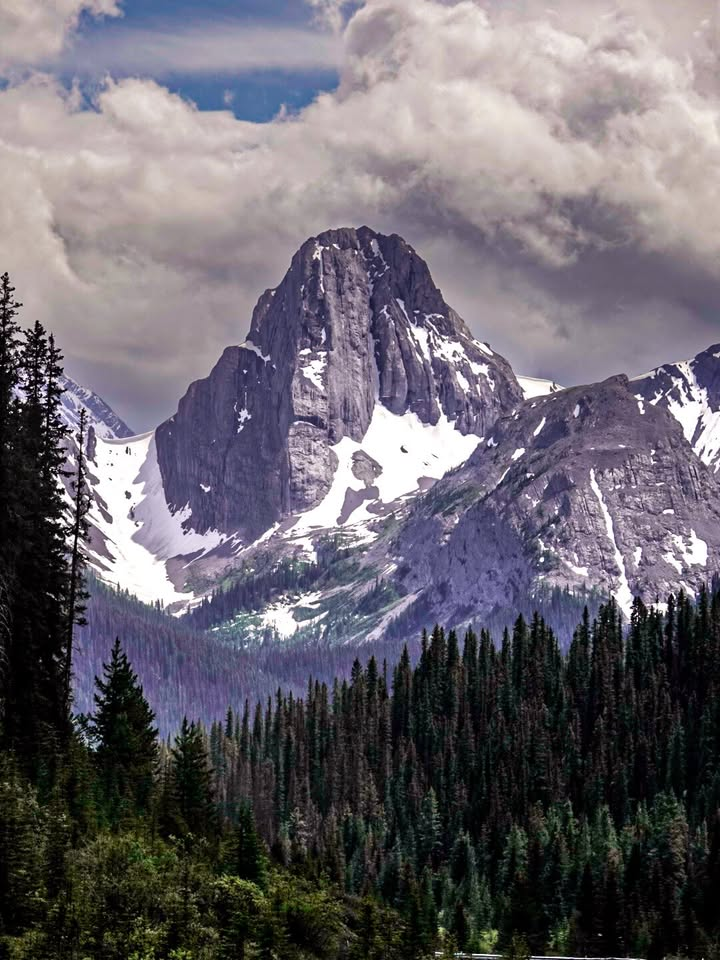
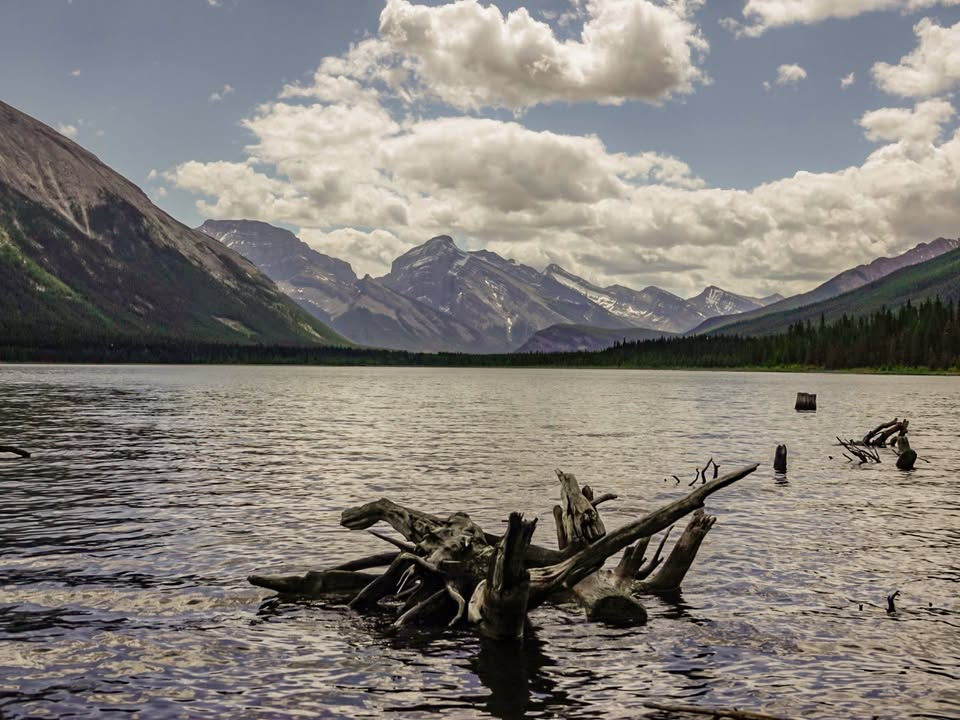
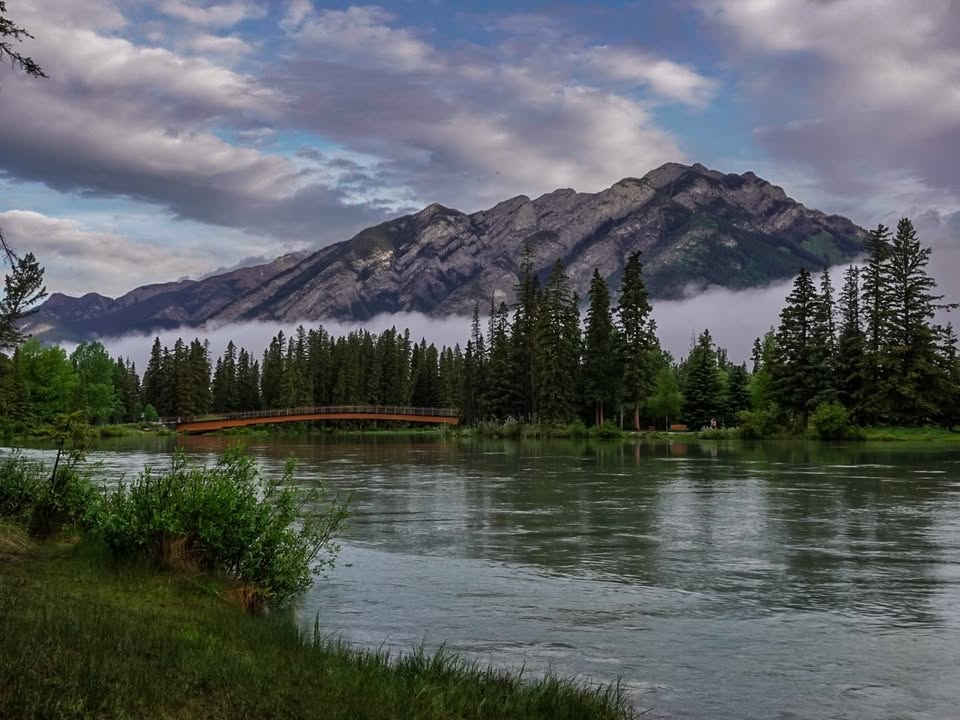
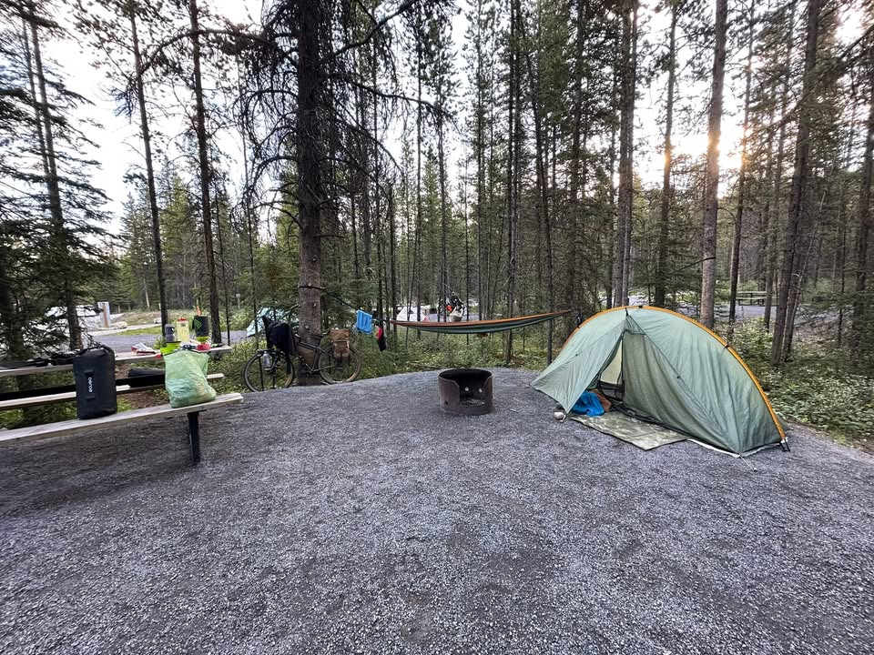
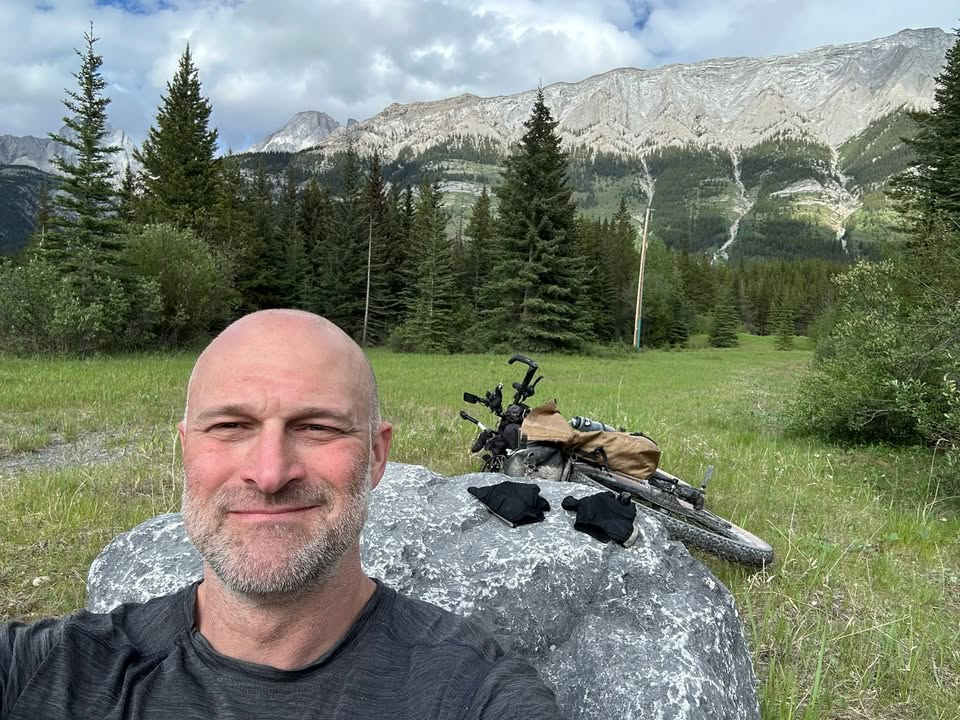

For a race that’s run entirely by yourself with no support, the excitement of the grand depart cannot be understated. Over 200 riders and viewers gathered to see Crazy Larry, the unofficial starter, energize the crowd and motivate everyone.

From the Journey
Some of my new friends recognized a few famous riders who have broken records in the past. Leah Wilcox currently holds the women’s record at 15 days, and this year she’s aiming for a new record (and is currently 40 miles ahead of her record).
However, the only famous rider I recognized and wanted to see was Mira. In this community, she’s celebrated for being the only dog to accomplish such feats alongside her owner Jon.

From the Journey
Riders are released in groups and waves based on their target completion days. This year, two or three riders are trying to beat the record, and there’s a live tracker for both the race and the tour.
All of us touring riders, effectively the “party pace,” were released around 8:30 AM. The first 15 miles of this ride were unbelievably breathtaking. I haven’t edited my photos from Day 1 yet, but I anticipate it will be challenging to pick the best ones.

From the Journey
With my new gear system, suspension, and tires this year, I enjoyed a relatively leisurely ride through amazing trails surrounded by stunning mountain views.
On Day 1, you also get a sense of who you’re riding with at your pace, and who you might later befriend.

From the Journey
Because of the prep rides I’ve done in the past, my gear stayed secure on my bike. However, many riders in the first 10 miles found themselves on the side of the trail, fixing their straps or securing equipment.
My bike performed perfectly, except for my adjustable bottle cages. I have four of them, and I really love the flexibility of picking up any bottle I want from town. However, these plastic cages have been in service since the last tour and are starting to wear down. I had one fail and another break. Fortunately, during this section of the ride, water resupplies are plentiful, so I didn’t need to carry too much water. Nonetheless, I’ll need to find a solution at the first bike shop I visit, hopefully picking up some more adjustable ones.

From the Journey
About 20 miles in, the ride opens up to a dirt logging road for the next 30 miles. With a headwind, it wasn’t the best experience, but then came the freezing rain, which definitely pushed the experience into “type two fun.” I desperately needed to take a break, but as long as I was moving, I stayed warm.
Coming off that road, there was a significant downhill, which I appreciated for not having to pedal, but I froze due to the wind and rain cutting through my windbreaker. At the bottom, miraculously, it was no longer raining, so I decided to take my break. The sun came out, and when I opened my food bag, I was delighted to find my favorite item: honey mustard pretzel bites.

From the Journey
While eating, there was a crow, a rather big bird, that ended up begging for some food. I obliged and now I have a new friend.
Campsite for the night was just another 10 miles on some paved trails, which were mostly downhill. Getting to the trading post I indulged in an orange crush and me and some other bikers found some campsites.

From the Journey
All in all a great day!

From the Journey